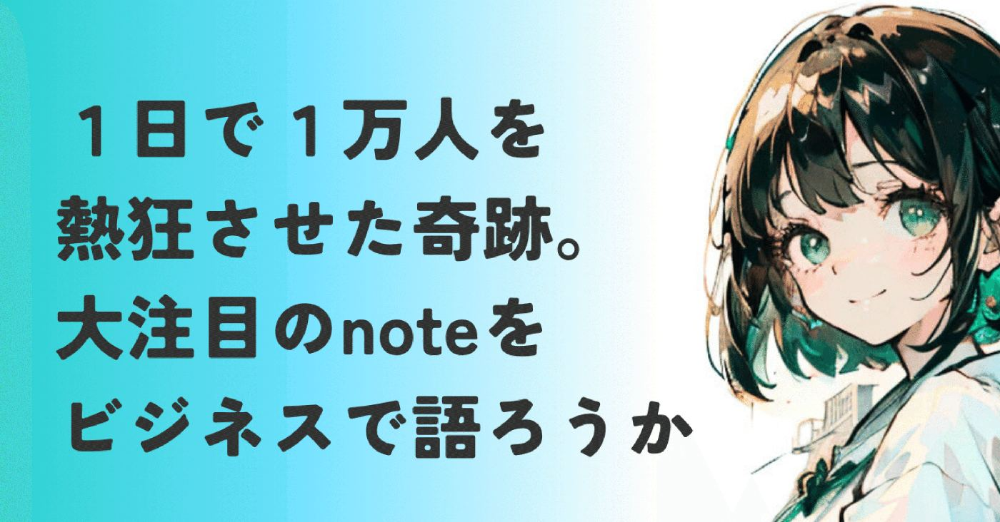
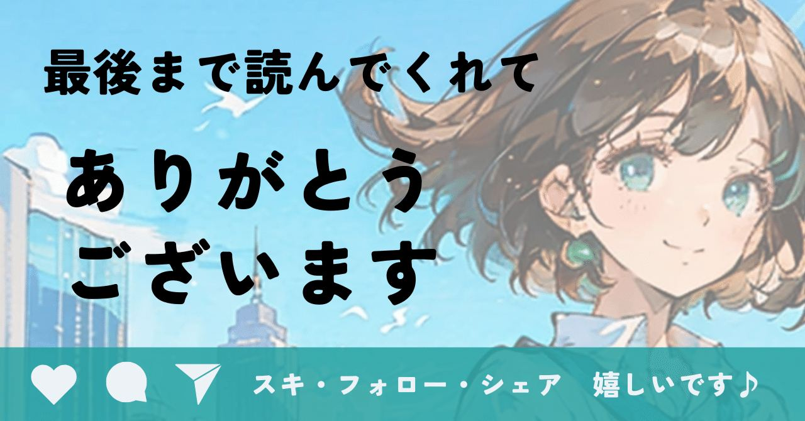

今回は推しベンチャーnoteを語る回です。
独断と偏見で語ります。
リクエストくださった龍之介さん・凛さん
ありがとうございます！！
龍之介さんについてご紹介
医療×スタートアップ×DX領域で、人と組織に向き合ってきました。
働き方改革ではなく「働く方改革」をテーマに発信中。
心理的安全性／1on1／マネジメント支援に関心あり。
https://note.com/hataraku_kaikaku/n/nebe8b0078385
特にマネジメント系の記事は必見です！！
いつも勉強させていただいてます。
凛さんについてご紹介
人事歴10年超。採用担当者の本音、知ってます。自身の転職活動で痛い目を見た話、note収益化の等身大の悩みを発信中（note開設10日で０→1達成済み）。労務担当の膨大な知識を活かしてiDeCo等や育児介護休業法も、分かりやすく楽しく解説しています。
https://note.com/airoumu_rin/n/n5e20d3ad988d
人事労務の情報は、ほぼ凛さんから仕入れています。びっくりするほど分かりやすいです。
イラストが可愛いので眼福です。
本題に戻りますが、初回はご存じ、
note株式会社です。
正直なところ使う前は、noteはブログサービスかクリエイターのプラットフォーム、程度の認識でした。
なんでこんな人気なんだろう？と不思議に思い調べてみたら、知れば知るほど、推したくなる理由がどんどん増えてくる。
ご存知でしたか？
noteってサービスを公開してからたったの
１日後に利用者が1万人超えてるんです。
https://note.com/sadaaki/n/n53f2a32fffa9?sub_rt=share_b
すごい！すごすぎる！！
あなたが普段使っているnoteがどれだけすごいか、ぜひ読んでみてくださいね。
ミッションから見るnoteの信念
noteのミッションってご存知でしょうか。
だれもが創作をはじめ、つづけられるようにする。
つづけられるようにするという、プロセスも書いているところがユニークです。
クリエイターの創作意欲が絶えてしまわないように、経済的にも精神的にもインフラを整えるという、難易度の高いミッション。
このミッションを考えた創業者である加藤 貞顕氏は、もともとアスキーやダイヤモンド社で、凄腕編集者として活躍していました。
出版という、特定の業界への深い知見を持っていた加藤氏。
こういう業界に詳しい人が起業家になるパターン、大好きです。
完全に偏見ですが、外の人が知らない業界の深い課題をよく理解している起業家は、大成してるイメージあります。
それはさておき、noteをスタートした当時の思いが以下の記事で語られています。
https://note.com/sadaaki/n/nd921f3f7c635?sub_rt=share_b
1994年に設立されたAmazonという会社は、インターネットでの物販を「普通のこと」にしました。
同じようにcakesでは、インターネットでのコンテンツの売買を「普通のこと」にすることを目指しています。
・未来をつくるひとびとに、価値ある経験や考えを、新鮮なまま届けたい。
・つくり手が、受け手とダイレクトにつながって、稼げる仕組みをつくりたい。
・想い（コンテンツ）は、モノ以上に価値があることを、ビジネスで証明したい。
クリエイターが報われ、読者にとって良質な知的好奇心を満たす。
この健全で文化的な循環を創り出すことこそが、noteが目指す世界観なんです。
どうやってPMFしたのか？
競合と比べてみる
noteを世に出す前、当時の市場には見えない大きなニーズがありました。
独自の体験や知見を、コンテンツとして販売したい。
時間と努力をかけて得た経験を、SNSやブログで無料で発信して終わらせたくない。
というプロ志向の高い個人の欲求です。
noteはここに、記事一本単位でスマホからでも簡単に価格設定して販売できるという、革命的な機能を投入。
個人の熱意やノウハウを、一瞬で経済的な価値に変えられる世界を実現したのです。
これこそがnoteがPMF(製品やサービスが市場に受け入れられた状態)を達成したコア機能であり、noteの独自性を際立たせた収益化モデルの正体です。
似たサービス自体は実は海外にもあるのですが、広告収入モデルだったりニュースレターに特化していたり。
noteは文章だけでなく画像、音声、動画など多様なコンテンツ形式に対応でき、より幅広いクリエイターを受け入れているのが大きな魅力。
だれもが創作をはじめ、つづけられるようにする。
というミッションに誠実に向き合った、クリエイターを大切にする世界観を体現していると思いませんか？
この柔軟な収益化と多様なコンテンツ形式への対応が、noteのPMFを爆発的に加速。
クリエイターとファンがメンバーシップという形で深く繋がることもできるコミュニティへと、noteを進化させたのです。
盤石な経済圏、LTVが保証する持続的成長
PMFの熱狂を、持続的な事業の成功へと導くのが、LTV（顧客生涯価値）の戦略的構築である話を、以前お話ししました。
https://note.com/alive_sheep6563/n/nbe0f09c390a1
上の記事でも少し触れましたが、noteのLTVを支えている収益戦略は段階的ティア型。
クリエイターがnoteを使い込むことで、コンテンツ消費（読むだけ）から経済活動の基盤（有料記事販売やメンシプ運用）へ進化します。
そしてメンバーシップを開設したら、クリエイターは長期的にnoteを使い続けるのがほぼ確定。
かっぴーさんみたいなnote外でも影響力のある凄腕クリエイターを、note内で囲い込めちゃうんですよね。ファンごと。
いずれ漫画も書籍配信アプリも、noteにとって代わられて必要なくなる世界が来るかもしれません。
そのくらい、noteは既存の市場を破壊をできそうだと思ってます。
その予想が当たるかどうかは置いておき、日本経済新聞社が株主だったり複数の出版社と提携していたりするのは興味深いですね。
読者・購読者層では、定期購読マガジンやメンシプといった月額課金制サービスの利用率が右肩上がり。
累計会員登録者数が1,000万人を突破し、累計ユニーククリエイター数も180万人を突破。
さらに、note proという法人向け事業の存在も無視できません。
例えば収益を出した個人クリエイターや中小企業がnote proへ上位移管すると。
個人の小さなLTVが、一気に年間数十万円〜数百万円へと跳ね上がります。
これぞ段階的ティア型の収益戦略の極み。
考えられてるな〜と惚れ惚れします。
ただし、私たちクリエイター側が知っておいた方がいいnoteの課題とリスクもあります。
1つは、コンテンツの質の維持。
質の低いコンテンツが氾濫すると、note全体の価値が低下する可能性が出てきます。
余談ですが、どう見てもAIが書きました、っていう記事は苦手です。
2つ目はnoteへの依存のリスク。
いくら伸びてる企業とはいえ、突然のサービスの変更や閉鎖によって、私たちクリエイターが大きな影響を受ける可能性は拭えません。
noteもガイドラインの徹底や多角的な収益化支援などで対処していくんでしょうけど、やっぱりクリエイター側としても、頭の隅にいれておく必要はあるかなと思います。
世界の衝撃。Googleとの資本業務提携が示す未来
noteの価値を論ずるなら、Googleとの資本業務提携は欠かせませんよね。
世界の技術と資金をリードするGoogleが、自社の巨大なリソースを使わず、日本の一企業に資本を投じる。
noteが世界の情報インフラの未来に必要な存在であると、Googleが判断した証拠ですね。
Googleがnoteに求めているのは、以下の2つ。
最高品質の日本語の文章
熱量の高い一次情報
AI時代を迎え、検索の質が問われる今、noteに溢れるのは、
専門家や熱量の高い個人による一次情報、
経済的な裏付けを持つ有料コンテンツ。
それこそがGoogleの検索技術やAI学習モデルにとって、とても希少価値の高い学習データになるんです。
noteが単なる日本のブログサービスの枠を超え、世界の知と創造性を支えるインフラとしてその地位を確固たるものにした象徴でしょう。
noteもこの提携を通じて、日本のクリエイターがかかわる経済全体に大きな影響を与えました。
創業者は、noteは街であると表現しました。
ここに、noteでのクリエイターの在り方が集約されているように感じます。
お店を出して好きなものを並べたり、街並みを楽しんだり。
質の高いコンテンツが公正に評価され、対価が得られる仕組みを作り出したnoteだからこそ実現した世界ですね。
https://note.jp/n/n0def26161c92
成長の予感。直近の売上と未来への加速
note株式会社は、売上高だけでなく、利益面で劇的な改善を見せています。
2025年11月期第3四半期単独の売上高は、1,075百万円(前年同期比27.2%増)を達成。
https://note.com/note_ir/n/nea5231204b62?sub_rt=share_b
営業利益が6四半期連続の黒字となり、収益性が確立されつつあることを意味しています。
主力のnote事業における四半期流通総額は5,537百万円に達し、前年同期比で27.4%増。
利用者を増やしただけでなく、質の高い収益源が伸びた結果ですね。
Googleとの提携による技術やノウハウの連携、法人事業のさらなる拡大。
そして創作を手軽に始め、続けられる世界。
これらが複合的に作用することで、noteの成長は今後さらに加速し、note経済圏というワードが市民権を得る時も近いのかも。
今日も読んでいただきありがとうございます！
感想・リクエストなどなど、お気軽にどうぞ。
コメント欄でお待ちしてます！
